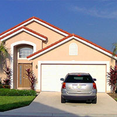

SILO is a simple yet powerful land-use model that is fully integrated with a travel demand model. This allow representing the full land-use/transportation feedback cycle.
SILO is a microscopic model, enabling the ingegration with both aggregate (or four-step) and disaggregate (or activity-based) travel demand models. SILO is written in Java and open-source.
Initially developed as a research project by Parsons Brinckerhoff, Inc. for Minneapolis/St. Paul, SILO is currently implemented for the state of Maryland by the National Center for Smart Growth at the University of Maryland.
Integrated land-use/ transportation models allow representing the land-use/ transportation feedback cycle, in which locations of households and jobs are used as trip ends to generate travel, and accessibilities of the travel demand model are used to influence relocation decisions.